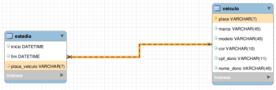
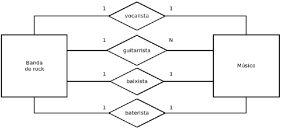

1. Considere a notícia acima e a existência de diversos bancos de dados no Brasil que armazenam veículos em seus registros. Considere que cada um desses bancos de dados tenha uma tabela de veículos, cuja chave primária é a placa. Considere ainda que em cada banco de dados há outras tabelas que apontam para a tabela de veículos por meio de chaves estrangeiras.
Dadas essas considerações, assinale a alternativa correta.
Resposta Correta: Mesmo com essas mudanças, é possível manter a placa como chave primária. Quando um veículo trocar de placa, será preciso atualizar a chave primária na tabela de veículos e atualizar os valores das chaves estrangeiras nas outras tabelas. Como cada uma dessas operações pode violar as restrições do banco de dados, pode ser necessário algum subterfúgio como por exemplo a desabilitação das chaves estrangeiras durante a operação.
2. Considere as seguintes tabelas:
CREATE TABLE paciente (id int primary key, nome text); CREATE TABLE medico (id int primary key, nome text); CREATE TABLE consulta (data date, id_paciente int, id_medico int);
Assinale a alternativa que indica uma consulta válida para identificarmos os médicos que não possuem consulta marcada na data de hoje.
Resposta Correta:
SELECT DISTINCT m.nome as nome_medico FROM medico m LEFT JOIN consulta c ON c.id_medico = m.id WHERE data != curdate() or data is null;
3. "Infodeck introdutório aos bancos de dados NoSQL: Este texto fornece uma breve introdução aos bancos de dados NoSQL. Nossa intenção é explicar ao público técnico-gerencial por que os bancos de dados NoSQL são importantes. Descrevemos por que os bancos de dados relacionais têm sido tão dominantes e quais forças levaram o NoSQL a quebrar esse domínio. Discutimos os principais benefícios de uma abordagem NoSQL, mas enfatizamos que os bancos de dados relacionais ainda têm um grande papel a desempenhar, por isso nossa ênfase na persistência poliglota." (FOWLER, M.; SADALAGE, P. Infodeck introdutório aos bancos de dados NoSQL. 2012).
Assinale a alternativa que melhor explica o que os autores do texto citado querem dizer com "persistência poliglota".
Resposta Correta: Novos sistemas continuarão usando os SGBDs relacionais, mas ao mesmo tempo utilizarão outros bancos NoSQL para propósitos específicos.
4. Considere uma tabela de solicitações feitas por cidadãos à Prefeitura de São Paulo criada com o seguinte comando:
CREATE TABLE solicitacoes ( data_abertura text, hora_abertura text, prefeitura_regional text, distrito text, orgao text, tema text, assunto text, servico text, status_solicitacao text, data_parecer text, hora_parecer text );
Considere ainda que uma certa consulta SQL produziu a seguinte saída (ordenada
por qtd de forma decrescente, limitada a 5):
| tema | qtd | |---------------|----------| | Rua e bairro | 526934 | | Lixo e limpeza| 261443 | | Transporte | 249783 | | Animais | 195256 | | Meio Ambiente | 185472 |
Qual das opções exibe uma consulta que poderia ter produzido a saída acima?
Resposta Correta:
SELECT tema, count(*) as qtd FROM solicitacoes GROUP BY tema ORDER BY qtd DESC LIMIT 5;
5. Considere a seguinte consulta:
SELECT nome FROM funcionario WHERE not(idade > 65 AND sexo = 'M' OR idade > 60 AND sexo = 'F');
Assinale a alternativa que indica um par válido de entrada e saída para essa consulta.
Resposta Correta:
Entrada: | nome | idade | sexo | |----------|-------|------| | Moacir | 70 | M | | Geraldo | 67 | M | | Enzo | 23 | M | | Karolyne | 23 | F | | Josefina | 63 | F | | Ivone | 70 | F | Saída: | nome | |----------| | Enzo | | Karolyne |
6. Considere a tabela pratos criada com:
CREATE TABLE pratos (nome text, pais_origem text, vegetariano boolean,
preco float);.
Qual alternativa seleciona somente os pratos vegetarianos, mostrando a diferença entre o preço médio do prato e o preço do prato vegetariano mais caro de seu país de origem?
Resposta Correta:
SELECT nome, (SELECT max(preco) FROM pratos p2 WHERE p1.pais_origem = p2.pais_origem and vegetariano) - preco as diferenca_pro_vegetariano_mais_caro FROM pratos p1 WHERE vegetariano;
7. Considere a uma tabela voos contendo um
registro por voo e a coluna orig_estado_abrv, que representa o
estado da federação de origem do voo.
Qual será o resultado da consulta abaixo?
SELECT count(*) FROM voos WHERE orig_estado_abrv = 'SP' AND orig_estado_abrv = 'RJ';
Resposta Correta: Zero.
8. Considere a execução de uma sequência de comandos, mas com uma parte dos comandos executados em uma sessão, e a outra parte executada em outra sessão (Transações e Permissões).
Associe corretamente a lista de comandos (I, II, III, IV) à lista de trechos das saídas produzidas (Acesso negado, Erro de sintaxe, Query OK, SELECT command denied to user).
Lista de comandos:
$ mysql -u u1 db2 -psenha$ mysql -u u2 db1 -psenha > DROP tb2;$ mysql -u u3 db1 -psenha > UPDATE tb1 SET x=2*x WHERE x>10;
$ mysql -u u3 db2 -psenha > UPDATE tb1 SET x=2*x WHERE x>10;
Resposta Correta: (III) (I) (IV) (II)
9. Considere agora a existência da tabela voos,
com um voo por registro e com a coluna data, representando a data
do voo.
Qual dos seguintes comandos exibe corretamente todos os dados dos voos ocorridos na data do voo mais antigo registrado?
Resposta Correta:
SELECT * FROM voos WHERE data = (SELECT min(data) FROM voos);
10. Considere um banco de dados para um sistema de controle de estacionamentos. Assinale a alternativa que corresponda a uma modelagem para esse problema que esteja na BCFN (Boyce-Codd Normal Form).
Requisitos: Armazenar horário de início e fim da estadia de cada veículo, o veículo estacionado, e o dono desse veículo.
Resposta Correta: A modelagem com as três tabelas: estadia (inicio, fim, placa_veiculo), veiculo (placa, marca, modelo, cor, cpf_dono) e dono (cpf, nome).
11. Sobre índices é correto afirmar que:
Resposta Correta: Considere uma base de dados construída para análises científicas que é montada uma vez e depois não é mais atualizada, e que possui muitos dados. Nesse caso compensa construir diversos índices que serão úteis para as consultas dos cientistas, pois mesmo que o tempo de criação dos índices seja grande, a alta velocidade das leituras subsequentes compensará o tempo de criação dos índices.
12. Assinale a alternativa que indica qual saída o comando
abaixo pode produzir, considerando a tabela doacoes que registra
doações para partidos políticos.
SELECT SiglaPartido, sum(Valor) as total_recebido FROM doacoes GROUP BY SiglaPartido ORDER BY total_recebido DESC LIMIT 5;
Resposta Correta: Uma tabela com duas colunas (SiglaPartido
e total_recebido) contendo 5 linhas, ordenadas de forma
decrescente pelo total_recebido (exemplo: PSDB, PT, SD, PSD, PMDB
com seus respectivos totais).
13. Considere a tabela municipio criada com a
chave primária id com a opção auto_increment.
Considere a execução do comando:
INSERT INTO municipio (nome, uf) VALUES ('Salvador', 'BA');.
Considere agora as seguintes afirmações:
Assinale agora a opção correta.
Resposta Correta: As sentenças I e II são falsas.
14. Considere essas três formas de se utilizar o computador para se obter a previsão do tempo:
I - SELECT temperatura, precipitacao FROM previsao WHERE data = CURDATE(); II - Computador, por favor, me dê a previsão do tempo de hoje. III - (Código Python/similar com inicialização de variáveis e loop FOR para buscar o dado)
Assinale a alternativa que corretamente ordena os itens acima em ordem crescente de abstração.
Resposta Correta: III, I, II.
15. Considere a seguinte tabela:
Tabela de municípios:
Não vou botar essa tabela no site nem ferrando
É correto afirmar que essa tabela:
Resposta Correta: Possui os campos "nome", "uf", "populacao" e "area".
16. Imagine o site de uma grande loja global de livros. Há sempre muitos clientes comprando livros na loja, e de vários lugares do mundo. Considere que o site da loja armazene seus dados (livros no estoque, vendas, etc.) em um banco de dados MySQL. Considere ainda que essa loja estabeleceu uma política de backup on-line e incremental para o banco MySQL, sendo o backup executado de hora em hora.
Considere agora as afirmações:
Sobre essas afirmações, assinale a alternativa correta.
Resposta Correta: As afirmações I, II e III fazem sentido e justificam a política de backup escolhida.
17. Considere a execução de uma sequência de comando, mas com uma parte dos comandos executados em uma sessão, e a outra parte executada em outra sessão. Os comandos estão listados abaixo, de forma que 1> indica o prompt da sessão 1, enquanto 2> indica o prompt da sessão 2.
1> CREATE TABLE pessoa (id int, nome text); 1> INSERT INTO pessoa VALUES (1, 'Fulano'); 1> BEGIN; 1> INSERT INTO pessoa VALUES (2, 'Ciclano'); 2> BEGIN; 2> INSERT INTO pessoa VALUES (3, 'Beltrano'); 2> ROLLBACK; 2> SELECT * FROM pessoa;
Assinale a alternativa que indica a saída obtida para a execução do último comando da sequência.
Resposta Correta:
+------+--------+ | id | nome | +------+--------+ | 1 | Fulano | +------+--------+
18. Considere um banco de dados com uma tabela voos, contendo a coluna companhia, com a sigla da companhia aérea que operou o voo. Considere também que esse banco possui uma tabela companhias, com um cadastro de todas as companhias aéreas existentes. O que representa a seguinte consulta?
SELECT (SELECT count(distinct companhia) FROM voos) / (SELECT count(*) FROM companhias);
Resposta Correta: A proporção de companhias cadastradas que operaram voos registrados na tabela voos.
19. Considere as seguintes tabelas:
CREATE TABLE bares (nome text, preco float);,
CREATE TABLE restaurantes (nome text, preco float);,
CREATE TABLE cafes (nome text, preco float);. Assinale a
alternativa que forneça um significado plausível para o seguinte comando:
SELECT nome, preco FROM ( SELECT nome, preco FROM bares WHERE preco = (SELECT min(preco) FROM bares) UNION SELECT nome, preco FROM restaurantes WHERE preco = (SELECT min(preco) FROM restaurantes) UNION SELECT nome, preco FROM cafes WHERE preco = (SELECT min(preco) FROM cafes) ) as lazer WHERE preco < 100;
Resposta Correta: Um rapaz está procurando um lugar para marcar um encontro. Ele está em dúvida entre um restaurante, um bar ou um café. Como o rapaz está com pouco dinheiro, ele vai considerar somente as opções mais baratas de cada categoria, e desde que o preço da diversão não saia mais que 100 reais.
20. Considere a seguinte modelagem feita para o banco de dados de um sistema de estacionamento:
Assinale a alternativa que indica em que forma normal se encontra essa modelagem.
Resposta Correta: 2FN.
21. Considere ainda a existência de uma tabela
acidentes_aereos, em que cada registro representa um acidente
aéreo e que possui as colunas quantidade_passageiros e
quantidade_vitimas_fatais. Assinale a alternativa que
corretamente consulta a porcentagem de vítimas fatais (em relação ao total de
passageiros) de cada acidente na tabela acidentes_aereos.
Resposta Correta:
SELECT quantidade_vitimas_fatais / quantidade_passageiros * 100 as porcentagem_sobreviventes FROM acidentes_aereos;
22. Considere o seguinte texto, que faz parte de uma descrição comercial na home page de uma suíte de produtos: "Pentaho Business Analytics: Empodere consumidores de dados com análises interativas, visualizações em tempo real e modelagens preditivas, com mínimo suporte de TI."
Assinale a alternativa que melhor esclarece o texto acima.
Resposta Correta: Os "consumidores de dados" são pessoas (analistas, gerentes, etc.) que querem explorar diretamente os dados sem a necessidade de depender de pessoas especialistas em TI ("com mínimo suporte de TI").
23. Considere a seguinte sequência de comandos:
> SELECT id, saldo FROM conta_corrente WHERE id in (1324, 7634); (Saída: 1324 - 5000.0 | 7634 - 40000.0) > BEGIN; > UPDATE conta_corrente SET saldo = saldo - 100 WHERE id = 1324; > UPDATE conta_corrente SET saldo = saldo + 200 WEHRE id = 7634; (Erro de sintaxe proposital no WHERE) > COMMIT; > SELECT id, saldo FROM conta_corrente WHERE id in (1324, 7634);
Qual é a saída produzida pelo último comando?
Resposta Correta:
id saldo 1324 5000.0 7634 40000.0
24. Considere as seguintes consultas realizadas sobre as
tabelas paciente, medico e consulta:
I) SELECT ... FROM paciente p, consulta c, medico m WHERE ...
II)
SELECT ... FROM paciente p JOIN consulta c ... JOIN medico m ...
III)
SELECT ... FROM paciente p JOIN consulta c JOIN medico m ON ...
IV)
SELECT ... FROM paciente p INNER JOIN consulta c INNER JOIN medico m ...
Assinale a opção que identifica corretamente os resultados obtidos para
essas consultas.
Resposta Correta: As consultas I, II, III e IV terão o mesmo resultado, independentemente do conteúdo das tabelas.
25. O diagrama a seguir representa uma modelagem ER para bandas de rock.

Considere as seguintes afirmações:
I - Uma banda de rock pode ter vários guitarristas.
II - Uma banda
de rock deve possuir exatamente quatro músicos.
III - Uma banda de rock
não pode possuir mais que um baterista.
IV - Uma banda de rock é
obrigada a ter um baixista.
V - Uma banda de rock não pode possuir um
flautista.
VI - Um músico pode pertencer a várias bandas.
Para um banco de dados que utilize a modelagem apresentada no diagrama, assinale a alternativa que apresente todas as afirmações verdadeiras.
Resposta Correta: I, III, IV e V.
26. O trecho do manual do MySQL (6.1.2.1) alerta que usar a senha na linha de comando (`mysql -u user -psenha`) é inseguro. Indique qual seria uma alternativa segura ao método discutido.
Resposta Correta: Logar com a opção -p sem passar o parâmetro (senha) no comando, o que fará com que a senha seja lida a partir de um prompt seguro do terminal.
27. Considere a seguinte tabela de pratos disponíveis em um
restaurante:
CREATE TABLE pratos (nome text, pais_origem text, vegetariano boolean,
preco float);
Considerando essa tabela, assinale a alternativa com o comando que torna possível a execução da seguinte consulta:
SELECT pais_origem as pais, count(*) as qtd_pratos_vegetarianos FROM pratos_vegetarianos GROUP BY pais_origem; +--------+-------------------------+ | pais | qtd_pratos_vegetarianos | +--------+-------------------------+ | Índia | 10 | | Itália | 7 | | Brasil | 4 | +--------+-------------------------+
Resposta Correta:
CREATE VIEW pratos_vegetarianos AS SELECT nome, pais_origem FROM pratos WHERE vegetariano;{% include nav-quiz-prova.html next="false" %} {% include footer.html %}